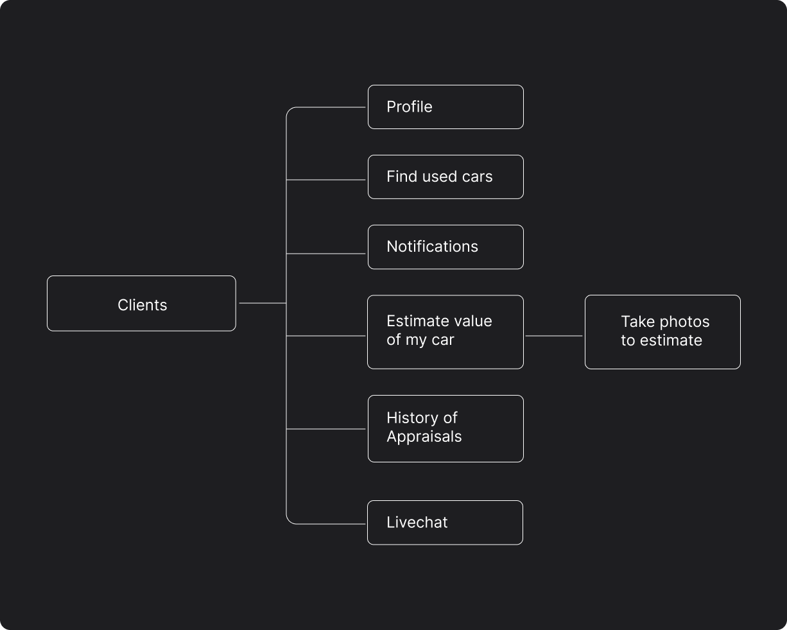
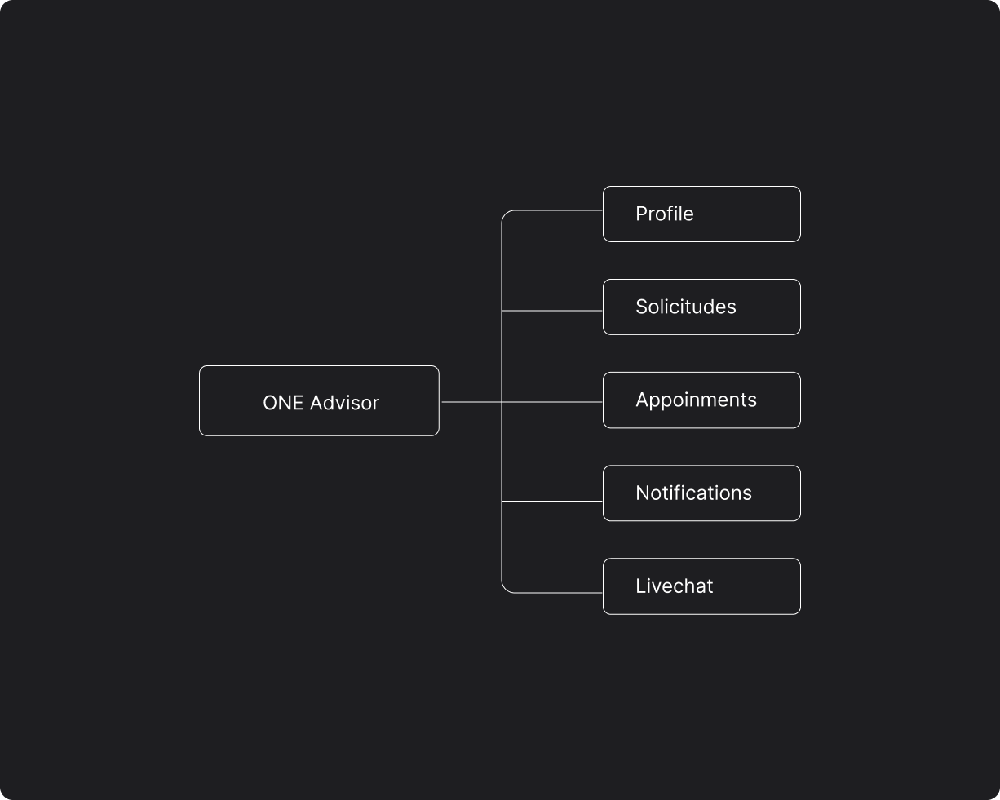

Selected Work
End-to-end design process — from discovery and research to final delivery.
UX Design · Mobile App · Sales Force Automation
Context
ONE is a Peruvian company specializing in the sale of certified pre-owned luxury cars no older than 2 years. The project involved three distinct user types — the client (buying and selling), the advisor, and the boss — each requiring a tailored experience within a single mobile ecosystem.
Challenge
The sales process was fragmented and heavily manual: advisors handled information sharing, appraisals, and meeting scheduling through scattered channels with no unified tooling, making it difficult to track the sales force or maintain a consistent client experience.
Goal
Design a mobile application that automates key processes — car information delivery, appraisal workflows, quotation generation, and appointment scheduling — while giving advisors real-time tools to efficiently manage and track the sales pipeline.
Project Overview
ONE is a Peruvian company specializing in the sale of certified pre-owned luxury cars no older than 2 years. The project involved three distinct user types — the client (buying and selling), the advisor, and the boss — each requiring a tailored experience within a single mobile ecosystem.
The sales process was fragmented and heavily manual: advisors handled information sharing, appraisals, and meeting scheduling through scattered channels with no unified tooling, making it difficult to track the sales force or maintain a consistent client experience.
Design a mobile application that automates key processes — car information delivery, appraisal workflows, quotation generation, and appointment scheduling — while giving advisors real-time tools to efficiently manage and track the sales pipeline.
Design Process
ONE customers are divided into two categories: buyers and sellers. The platform provides an e-commerce section with a specialized search filter, detailed vehicle safety information, and the ability to connect with an advisor via chat. The appraisal process is fully automated — clients follow a step-by-step workflow to upload vehicle photos and technical data, then track the status in the Appraisals section and schedule an in-person appointment if they qualify.
The ONE Advisor serves as the key intermediary in the sales force, responsible for receiving appraisals, reviewing submitted documents and vehicle photos, and coordinating meetings with buyers and sellers. The application keeps advisors informed through constant notifications and provides a calendar tool to select dates, times, and locations for client appointments upon completing the appraisal process.
The app splits into two parallel flows — one for clients (buyers and sellers) and one for advisors. Each has its own entry point, navigation structure, and feature set, while sharing a common back-end for appraisal data and messaging.

Buyers browse the marketplace and connect with advisors. Sellers follow the appraisal workflow — uploading photos, providing technical specs, tracking their submission, and booking appointments.

Advisors receive appraisals, review documentation, manage their pipeline, and use the calendar tool to schedule and confirm meetings with clients at every stage of the sales process.
Screens
ONE's customers can browse a curated luxury car marketplace, use specialized filters to find the right vehicle, and reach out to an advisor directly via chat. Sellers follow a guided appraisal workflow — uploading vehicle photos and technical data — then track the process and book an in-person appointment to close the sale.
Screens
The ONE Advisor app gives sales representatives all the tools they need to manage their pipeline in one place. They receive instant notifications on appraisal updates, review submitted documents and photos, and use a built-in calendar to schedule and confirm appointments — keeping the entire sales cycle moving efficiently.